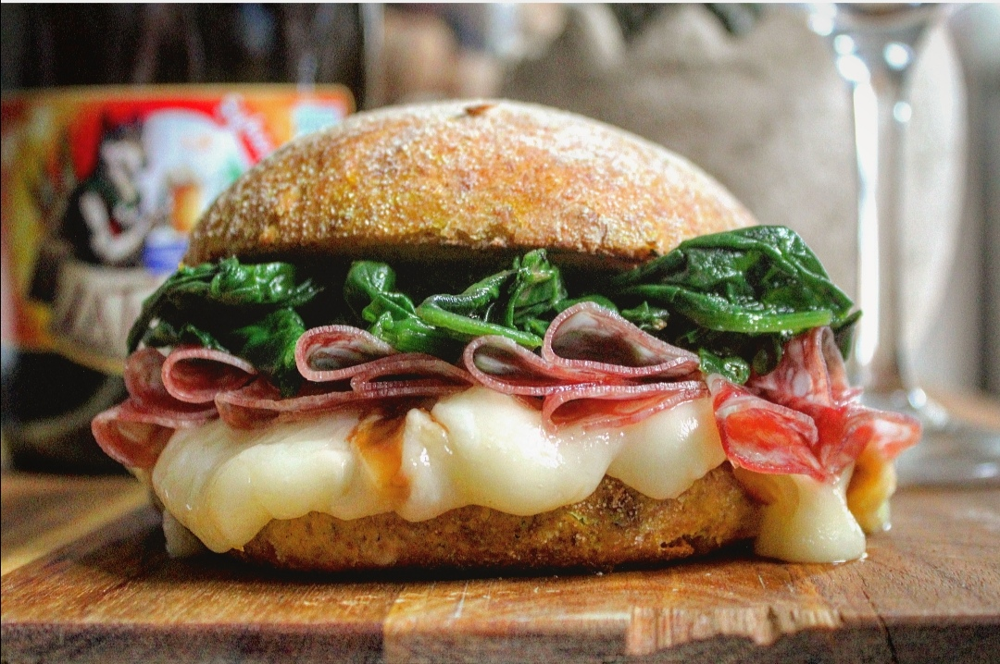

Bar
Elenco
- Caffè
- 1.00 Euro
- Cappuccino
- 1.20 Euro
| Cornetti |
Pastafrolla |
Sfogliatelle |
| Euro 0.90 |
Euro 1.20 |

Crea il tuo panino
Scegli cosa vuoi mangiare
- Prosciutto crudo
- Prosciutto cotto
- Insalata
- Pomodoro
- Mozzarella
- Verdure cotte di stagione
Calcolare calorie alimenti
Prodotti a base di glutine
In caso di allergie chiedere al personale